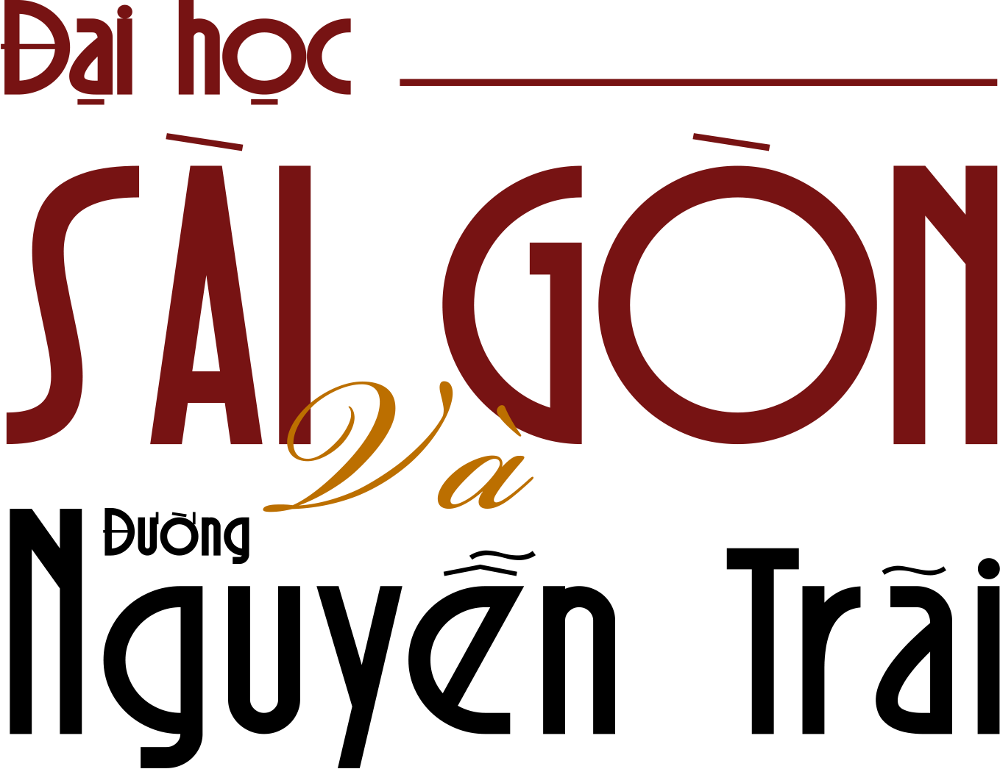
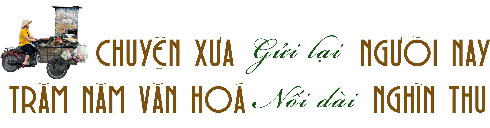
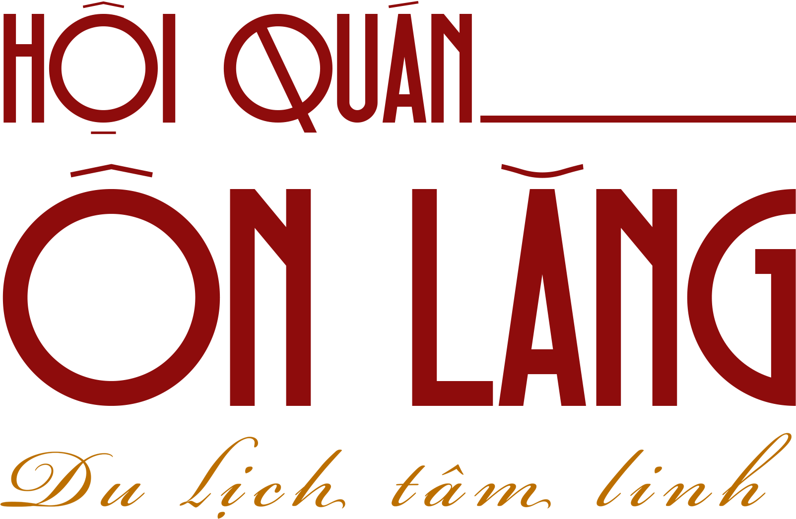
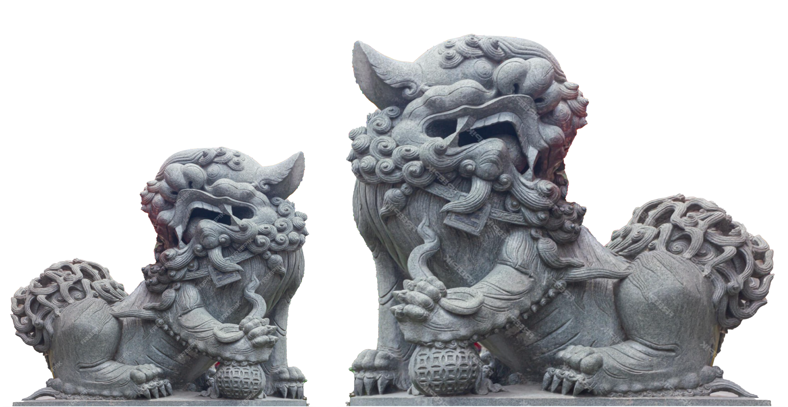
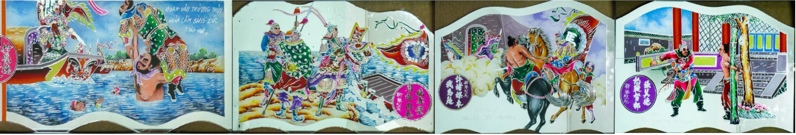
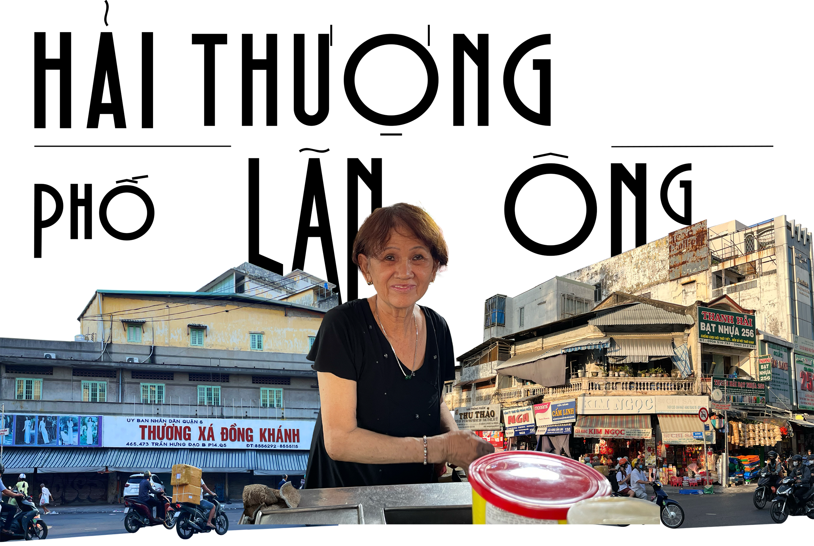

Quận 5 - Lịch sử & Văn hóa
Khám phá các cột mốc lịch sử quan trọng của Quận 5.


Trường Đại học Sài Gòn, chính thức thành lập năm 2007, nhưng có bề dày lịch sử lâu đời, là một trong những trường đại học nổi bật tại TP.HCM. Nơi đây không chỉ là cái nôi đào tạo nhiều thế hệ sinh viên mà còn là bối cảnh quen thuộc của nhiều MV nổi tiếng, với hình ảnh nữ sinh thướt tha trong tà áo dài trắng. Trường nằm trên đường Nguyễn Trãi – một trong những tuyến đường sầm uất và quan trọng bậc nhất của thành phố. Con đường này kéo dài từ Quận 5 đến Quận 1, nổi tiếng là “phố thời trang” với vô số cửa hàng quần áo, giày dép và phụ kiện. Đặc biệt, đoạn đi qua Quận 5 càng thêm đặc sắc bởi cộng đồng người Hoa sinh sống lâu đời, tạo nên một không gian văn hóa và ẩm thực đa dạng. Không chỉ là trục giao thông quan trọng, Nguyễn Trãi còn góp phần kết nối nhịp sống sôi động của Sài Gòn, vừa mang dấu ấn hiện đại vừa lưu giữ những giá trị truyền thống.




Hội quán Ôn Lăng, còn gọi là chùa Ôn Lăng, chùa Ông Lào hay chùa Quan Âm, là một công trình tâm linh lâu đời của người Hoa gốc Phúc Kiến tại Chợ Lớn, TP. Hồ Chí Minh. Được thành lập vào khoảng thế kỷ 17, ban đầu nơi đây là điểm gặp gỡ, hỗ trợ lẫn nhau của cộng đồng Phúc Kiến di cư sang Việt Nam. Hiện nay, hội quán thờ nhiều vị thần tiên, trong đó có Thiên Hậu và Quan Âm, và là địa điểm cầu tài, cầu an, cầu tự, cầu duyên của người Hoa. Với kiến trúc mang đậm dấu ấn Trung Hoa, hội quán Ôn Lăng không chỉ là nơi sinh hoạt văn hóa, tín ngưỡng mà còn là điểm tham quan hấp dẫn đối với du khách.



Chợ Xã Tây (Quận 5, TP.HCM) là thiên đường ẩm thực với nhiều món ăn mang đậm hương vị người Hoa. Nổi bật trong số đó là cà ri gà vịt của cô My, tồn tại hơn 40 năm với hương vị béo ngọt, thịt mềm thấm vị, ăn kèm bún hoặc mì tươi. Ngoài ra, chợ còn có hủ tiếu Thòn Ký nước lèo đậm đà, bánh hẹ tròn giòn thơm, cùng các món ốc tươi ngon, giá cả hợp lý. Sự đa dạng và hương vị đặc trưng khiến chợ Xã Tây trở thành điểm đến lý tưởng cho tín đồ ẩm thực Sài Gòn.

ĂN QUẬN 5, NẰM QUẬN 3, XA HOA QUẬN 1

Khu Thương xá Đồng Khánh và đường Hải Thượng Lãn Ông là hai địa điểm mang đậm dấu ấn văn hóa – thương mại của Quận 5, TP.HCM. Thương xá Đồng Khánh từng là trung tâm mua sắm sầm uất bậc nhất, nơi gắn liền với ký ức của nhiều thế hệ. Ngày nay, dù không còn giữ vị thế hàng đầu, nơi đây vẫn là điểm đến quen thuộc của người dân khu Chợ Lớn, nổi bật với những cửa hàng thời trang, phụ kiện mang phong cách Hong Kong xưa. Cách đó không xa, đường Hải Thượng Lãn Ông là thiên đường của ngành đông y. Những tiệm thuốc Bắc với mùi thảo dược đặc trưng, các bài thuốc gia truyền, cùng không khí giao thương nhộn nhịp khiến nơi này trở thành một phần không thể thiếu của cộng đồng người Hoa tại Sài Gòn. Dù thời gian trôi qua, cả hai địa điểm vẫn giữ được nét riêng, tiếp tục là những mảnh ghép đặc biệt trong bức tranh văn hóa Quận 5.